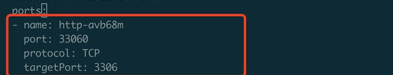

pod注入sidecar后无法连接mysql
问题现象
业务pod注入了envoy之后无法连接mysql，去掉envoy注入后，连接mysql正常。
处理过程
看了下isito的版本是1.3.6，是属于老版本，查看集群service，发现集群中存在一个service也是3306端口，这个svc是一个http类型的，有个http filter， 流量在sidecar里是tcp数据，在 这个http filter里解码不出来，这是老版本的一个bug。

解决方案
将service的端口改成其他的，彻底解决需要升级isito版本。